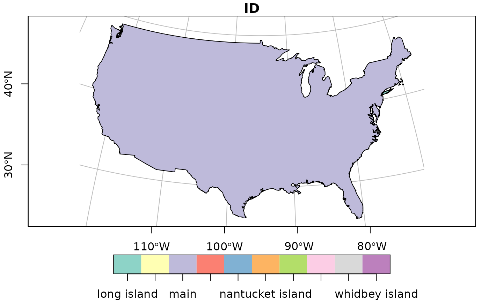

Compute graticules and their parameters
st_graticule(x = c(-180, -90, 180, 90), crs = st_crs(x), datum = st_crs(4326), ..., lon = NULL, lat = NULL, ndiscr = 100, margin = 0.001)
Arguments
| x | object of class |
|---|---|
| crs | object of class |
| datum | either an object of class |
| ... | ignored |
| lon | numeric; degrees east for the meridians |
| lat | numeric; degrees north for the parallels |
| ndiscr | integer; number of points to discretize a parallel or meridian |
| margin | numeric; small number to trim a longlat bounding box that touches or crosses +/-180 long or +/-90 latitude. |
Value
an object of class sf with additional attributes describing the type
(E: meridian, N: parallel) degree value, label, start and end coordinates and angle;
see example.
Use of graticules
In cartographic visualization, the use of graticules is not advised, unless the graphical output will be used for measurement or navigation, or the direction of North is important for the interpretation of the content, or the content is intended to display distortions and artifacts created by projection. Unnecessary use of graticules only adds visual clutter but little relevant information. Use of coastlines, administrative boundaries or place names permits most viewers of the output to orient themselves better than a graticule.
Examples
library(sf) library(maps) usa = st_as_sf(map('usa', plot = FALSE, fill = TRUE)) laea = st_crs("+proj=laea +lat_0=30 +lon_0=-95") # Lambert equal area usa <- st_transform(usa, laea) bb = st_bbox(usa) bbox = st_linestring(rbind(c( bb[1],bb[2]),c( bb[3],bb[2]), c( bb[3],bb[4]),c( bb[1],bb[4]),c( bb[1],bb[2]))) g = st_graticule(usa) plot(usa, xlim = 1.2 * c(-2450853.4, 2186391.9))invisible(lapply(seq_len(nrow(g)), function(i) { if (g$type[i] == "N" && g$x_start[i] - min(g$x_start) < 1000) text(g[i,"x_start"], g[i,"y_start"], labels = parse(text = g[i,"degree_label"]), srt = g$angle_start[i], pos = 2, cex = .7) if (g$type[i] == "E" && g$y_start[i] - min(g$y_start) < 1000) text(g[i,"x_start"], g[i,"y_start"], labels = parse(text = g[i,"degree_label"]), srt = g$angle_start[i] - 90, pos = 1, cex = .7) if (g$type[i] == "N" && g$x_end[i] - max(g$x_end) > -1000) text(g[i,"x_end"], g[i,"y_end"], labels = parse(text = g[i,"degree_label"]), srt = g$angle_end[i], pos = 4, cex = .7) if (g$type[i] == "E" && g$y_end[i] - max(g$y_end) > -1000) text(g[i,"x_end"], g[i,"y_end"], labels = parse(text = g[i,"degree_label"]), srt = g$angle_end[i] - 90, pos = 3, cex = .7) }))